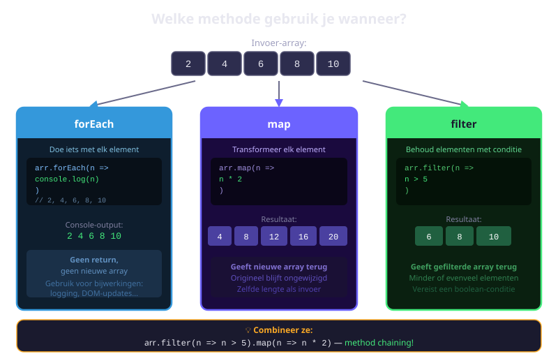
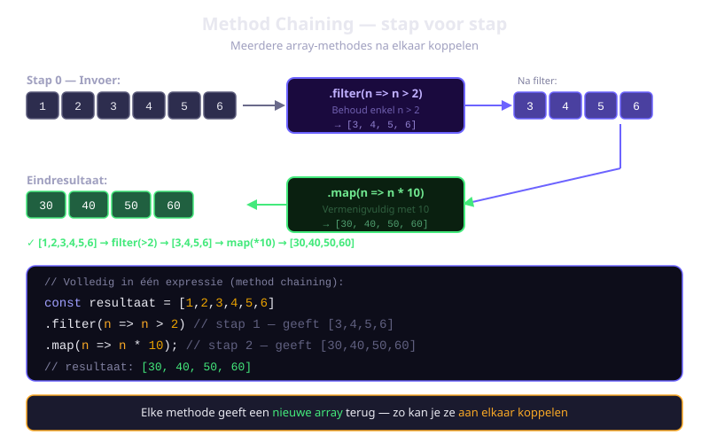
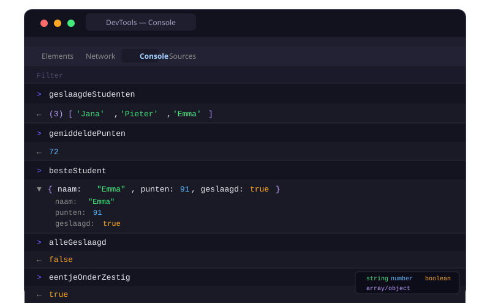

Array Methodes
forEach,map,filter,find,findIndex,someeneverytoepassen op arrays- Het verschil uitleggen tussen methodes die een nieuwe array teruggeven en methodes die dat niet doen
- Methodes combineren via method chaining
- De juiste methode kiezen voor een gegeven probleem
- Een studentenlijst analyseren met meerdere array-methodes
6.1 Wat zijn higher-order functies?
Een higher-order functie is een functie die een andere functie als argument aanneemt, of een functie als resultaat teruggeeft.
De array-methodes in dit hoofdstuk zijn allemaal higher-order functies: ze nemen een callback-functie aan die voor elk element van de array wordt aangeroepen.
const getallen = [1, 2, 3, 4, 5];
// De callback wordt voor elk getal aangeroepen
getallen.forEach(function(getal) {
console.log(getal);
});6.2 forEach — itereren zonder resultaat
forEach loopt over elk element van de array en voert een functie uit. Het geeft niets terug (return value is undefined).
const kleuren = ['rood', 'groen', 'blauw'];
kleuren.forEach(function(kleur, index) {
console.log(index + ': ' + kleur);
});
// 0: rood
// 1: groen
// 2: blauwDe callback krijgt drie parameters (je hoeft ze niet allemaal te gebruiken): element, index, array.
Wanneer forEach? Wanneer je iets wil doen met elk element, maar geen nieuwe array nodig hebt.
6.3 map — transformeer elk element
map maakt een nieuwe array door een transformatiefunctie toe te passen op elk element. De originele array blijft ongewijzigd.
const getallen = [1, 2, 3, 4, 5];
const verdubbeld = getallen.map(function(getal) {
return getal * 2;
});
console.log(verdubbeld); // [2, 4, 6, 8, 10]
console.log(getallen); // [1, 2, 3, 4, 5] — ongewijzigd!Met objecten — een eigenschap eruit halen:
const producten = [
{ naam: 'Laptop', prijs: 999 },
{ naam: 'Muis', prijs: 29 },
{ naam: 'Toetsenbord', prijs: 79 }
];
const labels = producten.map(function(product) {
return product.naam + ': €' + product.prijs;
});
console.log(labels);
// ['Laptop: €999', 'Muis: €29', 'Toetsenbord: €79']map geeft altijd een nieuwe array terug met hetzelfde aantal elementen als de originele array. Als je wil filteren, gebruik dan filter.
6.4 filter — selecteer elementen die voldoen
filter maakt een nieuwe array met enkel de elementen waarvoor de callback true teruggeeft.
const getallen = [1, 2, 3, 4, 5, 6, 7, 8, 9, 10];
const even = getallen.filter(function(getal) {
return getal % 2 === 0; // true → element wordt behouden
});
console.log(even); // [2, 4, 6, 8, 10]Filter op objecten:
const studenten = [
{ naam: 'Ali', punten: 72, geslaagd: true },
{ naam: 'Bo', punten: 45, geslaagd: false },
{ naam: 'Caro', punten: 88, geslaagd: true },
{ naam: 'Daan', punten: 38, geslaagd: false },
{ naam: 'Eva', punten: 91, geslaagd: true }
];
const geslaagd = studenten.filter(function(student) {
return student.geslaagd === true;
});
const uitstekend = studenten.filter(function(student) {
return student.punten > 80;
});
console.log(uitstekend.length); // 2
6.5 find en findIndex
find — eerste overeenkomend element
find geeft het eerste element terug waarvoor de callback true is. Als er geen is, geeft het undefined terug.
const studenten = [
{ naam: 'Ali', punten: 72 },
{ naam: 'Bo', punten: 45 },
{ naam: 'Caro', punten: 88 }
];
const eersteBoven80 = studenten.find(function(student) {
return student.punten > 80;
});
console.log(eersteBoven80); // { naam: 'Caro', punten: 88 }
// Niet gevonden → undefined
const boven100 = studenten.find(function(s) { return s.punten > 100; });
console.log(boven100); // undefinedfindIndex — index van het eerste overeenkomend element
const namen = ['Ali', 'Bo', 'Caro', 'Daan'];
const indexVanCaro = namen.findIndex(function(naam) {
return naam === 'Caro';
});
console.log(indexVanCaro); // 2
// Gebruik findIndex + splice om een element te verwijderen
const index = studenten.findIndex(function(s) { return s.naam === 'Bo'; });
if (index !== -1) {
studenten.splice(index, 1);
}6.6 some en every
some — minstens één element voldoet
const getallen = [1, 3, 5, 7, 8];
const heeftEven = getallen.some(function(getal) {
return getal % 2 === 0;
});
console.log(heeftEven); // true (8 is even)
const iemandGezakt = studenten.some(function(s) {
return s.geslaagd === false;
});
console.log(iemandGezakt); // trueevery — alle elementen voldoen
const getallen = [2, 4, 6, 8];
const alleEven = getallen.every(function(getal) {
return getal % 2 === 0;
});
console.log(alleEven); // true
const alleGeslaagd = studenten.every(function(s) {
return s.geslaagd === true;
});
console.log(alleGeslaagd); // false (Bo is niet geslaagd)| Methode | Geeft terug | Stopt vroeg wanneer |
|---|---|---|
some | boolean | Eerste true gevonden |
every | boolean | Eerste false gevonden |
6.7 Methodes combineren (chaining)
Het echte kracht van deze methodes ligt in chaining: je koppelt meerdere methodes aaneen. Elke methode ontvangt het resultaat van de vorige.
const studenten = [
{ naam: 'Ali', punten: 72, geslaagd: true },
{ naam: 'Bo', punten: 45, geslaagd: false },
{ naam: 'Caro', punten: 88, geslaagd: true },
{ naam: 'Daan', punten: 38, geslaagd: false },
{ naam: 'Eva', punten: 91, geslaagd: true }
];
// Stap 1: filter geslaagde studenten
// Stap 2: haal hun namen op
const namenGeslaagden = studenten
.filter(function(s) { return s.geslaagd; })
.map(function(s) { return s.naam; });
console.log(namenGeslaagden); // ['Ali', 'Caro', 'Eva']
Oefeningen
Gebruik de gegeven studentenarray en beantwoord de vragen via array-methodes.
const studenten = [
{ naam: 'Ali', punten: 72, klas: '6A', geslaagd: true },
{ naam: 'Bo', punten: 45, klas: '6B', geslaagd: false },
{ naam: 'Caro', punten: 88, klas: '6A', geslaagd: true },
{ naam: 'Daan', punten: 38, klas: '6B', geslaagd: false },
{ naam: 'Eva', punten: 91, klas: '6A', geslaagd: true },
{ naam: 'Finn', punten: 67, klas: '6B', geslaagd: true },
{ naam: 'Greta', punten: 55, klas: '6A', geslaagd: true },
{ naam: 'Hamid', punten: 29, klas: '6B', geslaagd: false }
];- Gebruik
filterom een lijst van geslaagde studenten te maken. Log het aantal - Gebruik
mapop de geslaagde studenten om een array van namen te maken - Gebruik
someom te controleren of iemand minder dan 30 punten heeft - Gebruik
everyop de studenten van 6A om te controleren of ze allemaal geslaagd zijn - Maak een puntenlijst van 6B via chaining (
filter + map)

Maak een productarray met minstens 8 producten (naam, prijs, categorie, op_voorraad). Beantwoord de volgende vragen via array-methodes:
- Gebruik
filterom enkel de producten op voorraad te tonen - Gebruik
mapom een lijst van prijslabels te maken:"Naam: €prijs" - Gebruik
findom het eerste product in een bepaalde categorie te zoeken - Gebruik
findIndexom de positie van een specifiek product te vinden en het daarna te verwijderen metsplice - Gebruik
everyom te controleren of alle producten een prijs hoger dan 0 hebben
Gebruik chaining om complexe bewerkingen in één expressie te schrijven. Maak een array van 10 willekeurige getallen tussen 1 en 100.
- Filter de getallen die groter zijn dan 50 én daarna map ze zodat elk getal verdubbeld wordt
- Filter de even getallen en map ze naar strings:
"Getal X is even" - Vergelijk de twee aanpakken: schrijf dezelfde bewerking eerst met een
for-lus en daarna met chaining. Welke is leesbaarder?
Huistaak
Opdracht: Filmcatalogus analyseren
Je analyseert een filmcatalogus met array-methodes. Gebruik map, filter, find, some en every.
Deel 1 — Basisanalyse (4 punten)
- Maak een array
filmsmet minstens 6 filmobjecten. Elk film heeft:titel,jaar,genre,beoordeling(0-10),bekeken(boolean) - Gebruik
filterom een lijst van films met een beoordeling hoger dan 7 te maken. Log de titels - Gebruik
mapom een array van labels te maken:"Titel (jaar) — beoordeling/10" - Gebruik
findom de eerste film in een bepaald genre te vinden
Deel 2 — Geavanceerde analyse (3 punten)
- Gebruik
someom te controleren of er films zijn die je nog niet hebt bekeken - Gebruik
everyom te controleren of alle films na 2010 uitgebracht zijn - Gebruik
findIndexom de positie van een film te vinden en vervang die film in de array door een nieuw object
Deel 3 — Chaining (3 punten)
- Gebruik chaining (
filter + map) om een gepersonaliseerde aanbevelingslijst te maken: enkel films die je nog niet hebt bekeken én een beoordeling hoger dan 8 hebben, als array van titels
Dien het bestand filmcatalogus.js in. Totaal: 10 punten
Vragenlijst
Controleer of je de leerstof van dit hoofdstuk begrijpt.
Welke array-methode gebruik je om elk element te transformeren en een nieuwe array te krijgen?
Wat geeft filter terug als geen enkel element voldoet aan de voorwaarde?
Wat geeft find terug als het gezochte element niet gevonden wordt?
Gegeven: [1,3,5,7].every(n => n % 2 !== 0). Wat is het resultaat?
Wat is method chaining?
Welke methode gebruik je om de index te vinden van het eerste object in een array dat aan een voorwaarde voldoet?